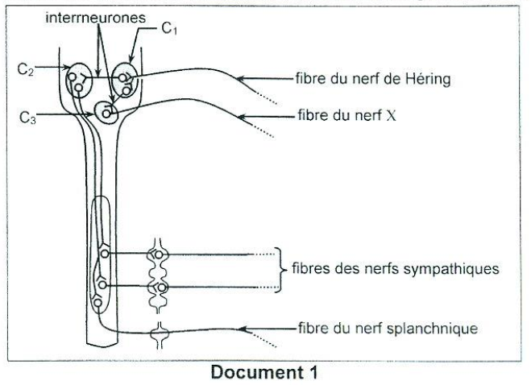
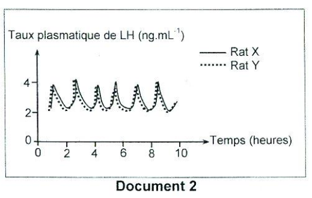
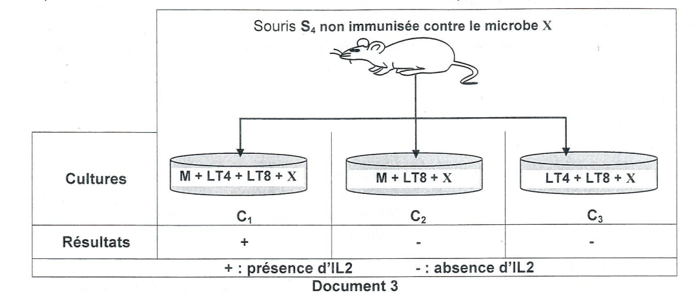
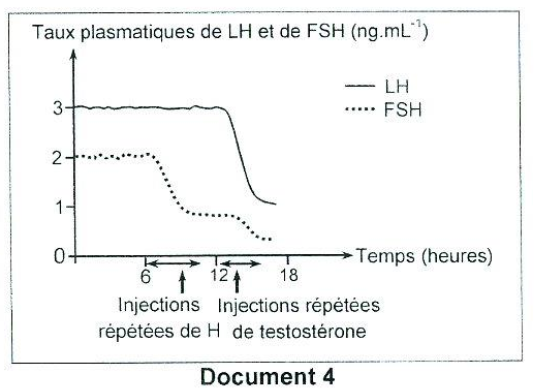
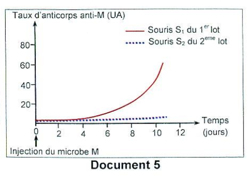
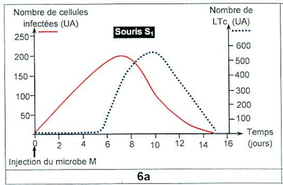
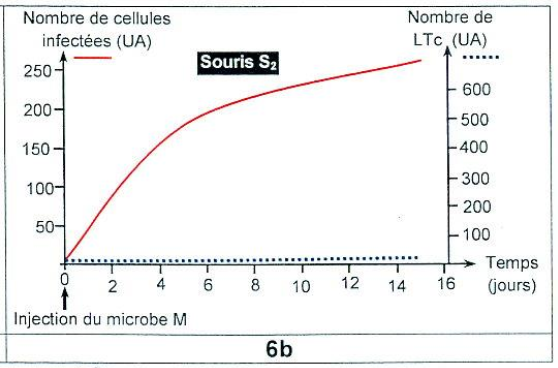
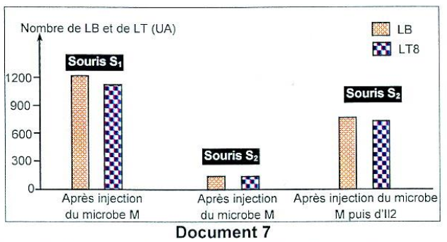

Sciences de la Vie
et de la Terre
Session de contrôle 2025 — Épreuve officielle simulée
Clique sur chaque verbe pour comprendre ce qu'attend le correcteur.
⚠️ Décrire sans interpréter = 0 pt.
⚠️ Nommer sans expliquer = incomplet.
⚠️ Affirmer sans justifier = non recevable.
⚠️ Rédiger un paragraphe entier = perte de temps.
⚠️ Ignorer les documents = hors sujet.
⚠️ Pas de légende = 0 pt.
Ce que tu dois savoir
Notions ciblées pour cette épreuve uniquement
Barorécepteurs : Localisés au niveau des sinus carotidiens et de la crosse de l'aorte. Ils sont sensibles à la pression artérielle.
Centres nerveux : Le bulbe rachidien contient :
- C₁ : Centre cardiomodérateur (parasympathique) – ralentit le cœur via le nerf X.
- C₂ : Centre vasomoteur (sympathique) – régule le tonus des vaisseaux.
- C₃ : Noyau du X (nerf vague) – origine des fibres parasympathiques.
Réflexes : Une hypotension → activation des barorécepteurs → augmentation des PA dans les nerfs de Héring → inhibition du C₁ (tachycardie), activation du C₂ (vasoconstriction).
توجد مستقبلات الضغط في الجيوب السباتية وقوس الأبهر. يحتوي النخاع المستطيل على ثلاثة مراكز: C₁ (مركز تسرع القلب)، C₂ (المركز الحركي الوعائي)، C₃ (نواة العصب X). يؤدي انخفاض ضغط الدم إلى تثبيط C₁ وتنشيط C₂.
Axe hypothalamo-hypophyso-testiculaire :
- L'hypothalamus sécrète la GnRH.
- La GnRH stimule l'hypophyse antérieure à sécréter LH et FSH.
- LH agit sur les cellules de Leydig → sécrétion de testostérone.
- FSH agit sur les cellules de Sertoli → sécrétion d'inhibine et d'ABP.
- La testostérone et l'inhibine exercent un rétrocontrôle négatif sur l'hypothalamus et l'hypophyse.
يحفز الـ GnRH الغدة النخامية الأمامية لإفراز الـ LH والـ FSH. يحفز الـ LH خلايا لايديغ لإفراز التستوستيرون، ويحفز الـ FSH خلايا سيرتولي لإفراز الإنهيبين والـ ABP. تمارس التستوستيرون والإنهيبين تغذية راجعة سلبية على منطقة تحت المهاد والغدة النخامية.
Réponse immunitaire à médiation humorale (RIMH) : Les lymphocytes B (LB) se différencient en plasmocytes qui sécrètent des anticorps.
Réponse immunitaire à médiation cellulaire (RIMC) : Les lymphocytes T cytotoxiques (LTc) tuent les cellules infectées via la perforine.
Coopération cellulaire : Les lymphocytes T4 (LT4) sécrètent l'interleukine 2 (IL2) qui active la prolifération des LB et des LT8 (LTc).
Immunodéficience : Un défaut de production d'IL2 → absence d'activation des LB et des LTc → absence de réponse immunitaire spécifique (RIMH et RIMC).
تتمايز الخلايا الليمفاوية B إلى خلايا بلازمية تفرز أجساماً مضادة (RIMH). تقتل الخلايا الليمفاوية T السامة (LTc) الخلايا المصابة عبر البيرفورين (RIMC). تفرز الخلايا الليمفاوية T4 (LT4) الإنترلوكين 2 (IL2) الذي ينشط تكاثر LB و LT8. يؤدي نقص IL2 إلى عجز مناعي.
Ministère de l'Éducation
EXAMEN DU BACCALAURÉAT
Pour chacun des items suivants (de 1 à 8), il peut y avoir une (ou deux) réponse(s) correcte(s). Reportez sur votre copie le numéro de chaque item et indiquez dans chaque cas la (ou les deux) lettre(s) correspondant à la (ou aux deux) réponse(s) correcte(s).
NB : toute réponse fausse annule la note attribuée à l'item.

doc1-pression.png
| Substance | Origine | Condition de sécrétion | Effets physiologiques |
|---|---|---|---|
| Acétylcholine | |||
| Noradrénaline | |||
| Adrénaline |

doc2-lh.png
- dégager une information concernant la sécrétion de la GnRH et de la testostérone chez le rat Y.
- proposer deux hypothèses expliquant la stérilité du rat Y.

doc3-cultures.png
a- identifiez l'hormone H et la substance S.
b- expliquez le mécanisme qui a permis de corriger la stérilité du rat Y.

doc4-lh-fsh.png

doc5-anticorps.png

doc6a.png

doc6b.png
a- le rôle des LTc dans la réponse immunitaire.
b- une autre information concernant la nature de la réaction immunitaire développée contre le microbe M.

doc7-lb-lt8.png
Pour chacun des items suivants (de 1 à 8), il peut y avoir une (ou deux) réponse(s) correcte(s). Reportez sur votre copie le numéro de chaque item et indiquez dans chaque cas la (ou les deux) lettre(s) correspondant à la (ou aux deux) réponse(s) correcte(s).
NB : toute réponse fausse annule la note attribuée à l'item.